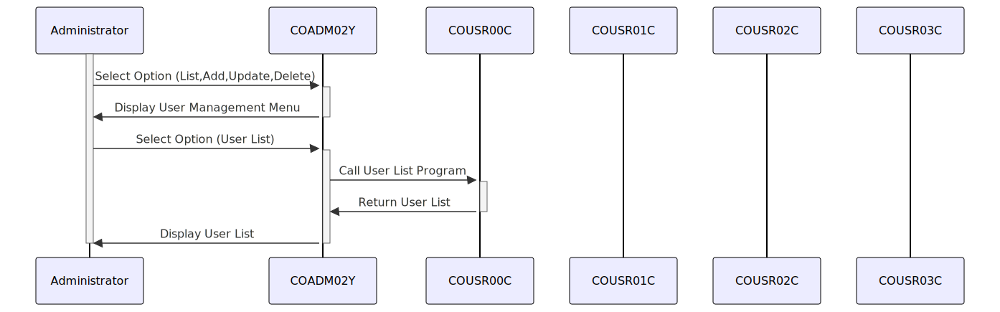

Gerado em: 1º de outubro de 2024
Título do Documento: CardDemo Application - Especificação do Menu de Gerenciamento de Usuários Administrativos
Descrição Resumida:
Este documento descreve as especificações para o menu administrativo “User Management” (Gerenciamento de Usuários) dentro da aplicação CardDemo. Este menu é um componente crítico da estrutura de segurança do sistema, fornecendo ao pessoal autorizado ferramentas para gerenciar contas de usuário e suas permissões associadas.
Histórias do Usuário:
Como administrador do sistema, preciso ser capaz de gerenciar contas de usuário para poder controlar o acesso à aplicação CardDemo.
Épico Relacionado:
6 - Gerenciamento de Usuários e Segurança
Requisitos Funcionais:
O menu “User Management” (Gerenciamento de Usuários) deve fornecer as seguintes funcionalidades:
- User List (Lista de Usuários):
- Exibir uma lista de todas as contas de usuário existentes, incluindo nomes de usuário, IDs de usuário e níveis de acesso.
- Permitir que os administradores pesquisem usuários específicos com base no nome de usuário ou ID do usuário.
- User Add (Adicionar Usuário):
- Permitir que os administradores criem novas contas de usuário fornecendo um nome de usuário exclusivo, senha e nível de acesso.
- Aplicar regras de complexidade de senha para garantir a segurança de novas contas.
- User Update (Atualizar Usuário):
- Permitir que os administradores modifiquem informações de usuários existentes, como nomes de usuário, senhas e níveis de acesso.
- Registrar todas as alterações feitas nas contas de usuário para fins de auditoria.
- User Delete (Excluir Usuário):
- Permitir que os administradores excluam contas de usuário existentes.
- Exigir confirmação antes de excluir uma conta para evitar exclusões acidentais.
Requisitos Não Funcionais:
- Segurança:
- O menu “User Management” (Gerenciamento de Usuários) deve ser acessível apenas a administradores autenticados e autorizados.
- As credenciais do usuário devem ser armazenadas com segurança usando algoritmos de criptografia ou hashing.
- Desempenho:
- O menu deve carregar e responder às ações do usuário rapidamente, com latência mínima.
- Usabilidade:
- O menu deve ter uma interface amigável que seja fácil de navegar e entender.
- Confiabilidade:
- O menu deve funcionar de forma confiável e consistente, sem erros ou comportamento inesperado.
Critérios de Aceitação:
- O menu “User Management” (Gerenciamento de Usuários) deve ser integrado com sucesso à aplicação CardDemo.
- Todas as funcionalidades do menu devem ser testadas e verificadas para funcionar conforme o esperado.
- O menu deve atender a todos os requisitos especificados de segurança, desempenho, usabilidade e confiabilidade.
- Os administradores do sistema devem ser capazes de usar o menu para gerenciar contas de usuário e controlar o acesso à aplicação CardDemo de forma eficaz.
Melhorias de Código:
- Tratamento de Erros: Implementar tratamento de erros robusto para lidar com situações inesperadas, como falhas de conexão com o banco de dados ou entradas inválidas do usuário.
- Log: Aprimorar o log para capturar todas as ações do usuário, eventos do sistema e erros para fins de auditoria e solução de problemas.
- Documentação: Fornecer documentação abrangente para o código do menu, funcionalidades e configuração para facilitar a manutenção e melhorias futuras.
Melhorias de Segurança:
- Validação de Entrada: Implementar validação de entrada rígida para evitar injeção de SQL e outras vulnerabilidades de segurança.
- Gerenciamento de Sessão: Implementar gerenciamento de sessão seguro para proteger as contas de usuário contra acesso não autorizado.
- Política de Senha: Impor uma política de senha forte que exija que os usuários criem senhas que atendam a determinados requisitos de complexidade.
Diagrama Conceitual:

–Made by “Smart Engineering” (by Compass.UOL)–